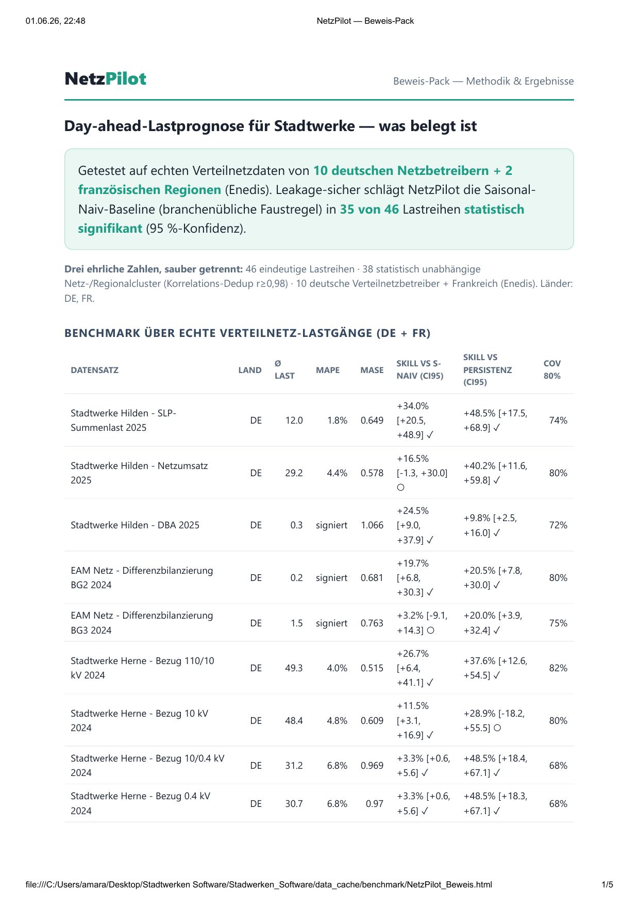

Software · Energy forecasting
NetzPilot
A leakage-safe, day-ahead load-forecasting and §14a grid-coordination tool for small German municipal utilities — delivering calibrated P10/P50/P90 uncertainty bands and a fair, minimal-curtailment control schedule.
Overview
NetzPilot is forecasting and grid-coordination software aimed at small German Stadtwerke — municipal utilities that operate the local distribution grid but rarely have the budget or staff for the heavy, expensive tools sold to large operators. It answers two questions a utility faces every single day: how much electricity will the grid draw tomorrow, and how confident can we be? — and then uses that forecast to coordinate flexible consumers within the law.
The problem
Small utilities, big regulatory pressure.
Germany's §14a EnWG regulation obliges grid operators to actively manage flexible loads — heat pumps, wallboxes, home batteries — in a way that protects the grid but never discriminates between customers. At the same time, every error in a utility's day-ahead schedule shows up as real money through balancing-energy costs.
The established tools that solve this are powerful but expensive and heavy — a poor fit for a utility with one to three energy-IT staff and an IT budget under 1% of revenue. NetzPilot deliberately targets the narrow, high-value day-ahead layer: get the forecast right, quantify its uncertainty honestly, and build coordination on top of it.
What it does
From raw meter data to a defensible schedule.
- Day-ahead & multi-day forecasting (D+1 … D+3) of grid load and residual load, with calibrated P10/P50/P90 bands and an intraday correction for the remaining day.
- §14a coordination that finds the fairest, smallest curtailment using an analytic "water-filling" method instead of bluntly dimming every device to the legal floor.
- Compliance & audit — a monthly regulatory report plus a non-discrimination proof derived from a tamper-evident, hash-chained ledger of every intervention.
- Balancing-group economics reported as a Monte-Carlo range rather than a single headline number, so savings are never overstated.
- Standards-based hand-off via the EEBUS "Limitation of Power Consumption" use-case to certified energy-management gateways — NetzPilot never touches the smart-meter gateway itself.
- Robust data ingestion for utility CSV/Excel exports and the MSCONS (EDIFACT) metering format, served through a FastAPI app with a live cockpit and a ~15-second instant backtest.
Approach & methods
Calibrated forecasts, not just point predictions.
The forecaster pairs a strong, transparent baseline — the load of the same weekday and hour one week earlier — with a gradient-boosted (LightGBM) quantile model on leakage-safe calendar and lag features. A shrinkage step keeps the model from ever drifting clearly below that trivial baseline.
Uncertainty is the centrepiece. Rather than trusting a model's raw quantiles, NetzPilot applies Conformalized Quantile Regression, which wraps the predictions in a distribution-free calibration layer so the stated coverage is the coverage you actually get. Holiday-aware fallbacks, an online residual-feedback correction, and rolling asymmetric recalibration round out the engine.
Everything is judged under a strict protocol: rolling-origin evaluation, mandatory persistence and seasonal-naive baselines, and paired block-bootstrap significance tests (10,000 resamples, whole days as blocks) over an 84-day test window — on 46 publicly published distribution-grid load series from Germany and France.
Results
It beats the baseline — and proves it.
Across the 46 real load series, NetzPilot significantly outperforms the seasonal-naive baseline on 44 of them, with a mean skill gain of +23.7%. The chart below shows the improvement on four representative series; all four gains are statistically significant.
Forecast skill vs. seasonal-naive baseline
Higher is better — reduction in error relative to the seasonal-naive forecast.
National load: MAPE 3.36% on a two-year SMARD window. City series: MAPE 3.5–4.8%, each significant under a paired block-bootstrap test.

Coordination & economics
On the control side, rolling §14a re-dispatch cut the curtailment energy by an average of 74.3% compared with blanket dimming, while always respecting the grid limit and the 4.2 kW legal floor — and the system rejects any illegal schedule outright. Balancing-group savings are reported honestly as a range: strongly positive on some grids (e.g. ≈ +43,700 €/year on one series, with a 99.9% probability of saving), and explicitly break-even on others.
An honest result worth highlighting. An early version showed a large accuracy gain "from weather data" — which turned out to be data leakage: the historical "forecast" weather was identical to the archived ground truth. After fixing it, the true weather contribution was near zero. Finding and reporting that bug, rather than shipping the inflated number, is exactly the kind of rigor the project is built on.
Technology
Built to run anywhere, audited end to end.
A clean Python package with a tested evaluation harness, packaged as a container so a utility can run it on a laptop or a small server with no cloud dependency.
Scope & honesty
NetzPilot is validated on public distribution-grid load profiles used as a realistic proxy; it has not yet been run as a live pilot on a single customer's full metering and settlement data, and the documentation says so plainly. It is a private, proprietary project — shown here as a case study, with source code not publicly released.